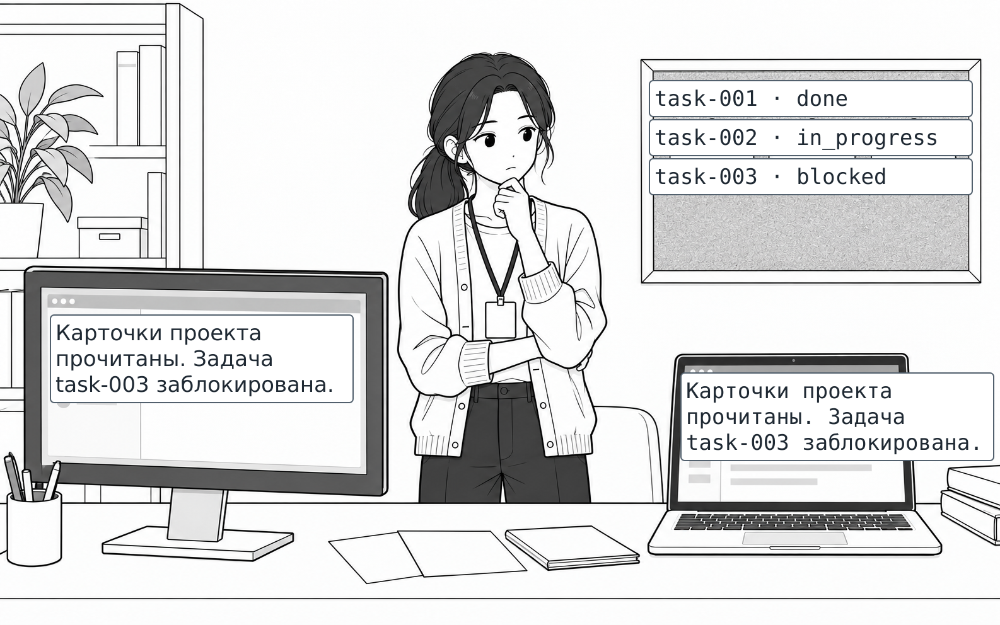
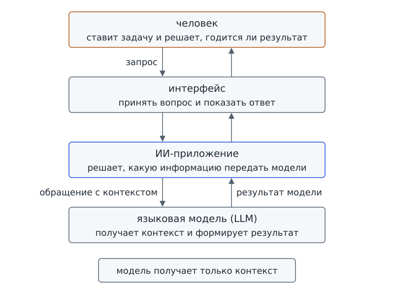
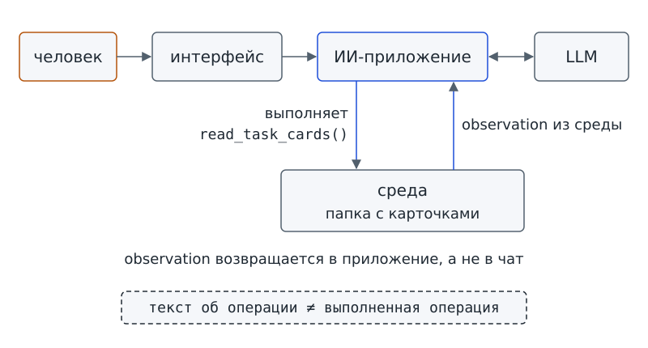

Глава 1. Модель, приложение и агент: кто отвечает, а кто действует?¶
С чего всё началось¶
До Фестиваля науки осталось три недели. В школе фестиваль готовят несколько групп: редакционная согласовывает программу, группа дизайна рисует афишу, лабораторная собирает оборудование для стендов. Чтобы задачи не потерялись, в школе работает проектное бюро — несколько человек, которые следят за всеми задачами сразу. Ты тоже входишь в состав бюро. Аня — координатор: на её компьютере хранится доска задач.
Доска задач — это папка с карточками. Каждой задаче отведена отдельная карточка: в ней написано, что нужно сделать, кто выполняет работу и в каком состоянии дело. Номер карточки начинается с task — по-английски «задача»; дальше стоит число. Последние слова в строках обозначают состояние работы: done означает «сделано», in_progress — «в работе», blocked — «работа остановилась из-за препятствия». Сейчас на доске три карточки, по одной для каждой группы:
task-001 Согласовать программу фестиваля редакционная группа done
task-002 Подготовить макет афиши группа дизайна in_progress
task-003 Проверить список оборудования лабораторная группа blocked
Каждый вечер Аня вручную составляет сводку: что сделано, что ещё в работе и что остановилось из-за препятствия. Повторять эту работу ей надоело, и Аня попробовала поручить сводку ИИ-помощнику. Буквы «ИИ» означают «искусственный интеллект»; пока так назовём программу, которой можно задать вопрос обычными словами. На следующий день Аня показывает тебе два экрана с результатами двух запусков.
В первом запуске программа пишет:
Карточки проекта прочитаны. Задача task-003 заблокирована.
Во втором запуске программа пишет:
Карточки проекта прочитаны. Задача task-003 заблокирована.
Сообщения совпадают слово в слово. Совпадает с доской и названный статус: задача task-003 действительно заблокирована. На первый взгляд кажется, что правильный ответ подтверждает чтение карточек.
— Смотри, — говорит Аня, — одна из этих двух программ правда открывала папку с карточками. А вторая — нет. Она вообще не умеет открывать файлы и всегда пишет одну и ту же фразу. Угадай, какая из них какая.
Можно ли по этим экранам определить, какая программа читала карточки? Нельзя: тексты одинаковы. Фразу о чтении написала даже программа, которая не умеет открывать файлы. Значит, по одной этой фразе нельзя доказать, что чтение состоялось.
Вопрос-Прогноз. Что нужно знать о программе — не о её словах, а о её устройстве, — чтобы доказать, что чтение карточек произошло на самом деле? Запиши свою версию, прежде чем читать дальше.
Чтобы ответить на вопрос о чтении карточек, нужно выяснить, из каких частей состоит ИИ-помощник и какую работу выполняет каждая часть. Отсюда и главный вопрос главы.
Главный вопрос главы. Кто в ИИ-системе формирует ответ, кто выбирает следующий шаг, а кто действительно выполняет операцию?

Фигура 1. Уверенная фраза и непрочитанные карточки
После главы ты сможешь¶
- различать четыре роли внутри помощника и объяснять, кто принимает вопрос, кто готовит ответ и кто показывает его человеку;
- объяснять, почему для ответа недостаточно просто иметь файл на диске;
- показывать на схеме, какой код связывает помощника с папкой файлов;
- отличать текст об операции от её выполнения;
- находить конкретную операцию, которую программа умеет выполнять;
- различать заранее заданный маршрут и маршрут, в выборе которого участвует отвечающий компонент;
- формулировать цель и границы нашего учебного помощника.
Урок 1. Что скрывается за одним окном чата¶
1. Четыре роли¶
Посмотри на окно чата, в котором Аня задавала вопрос. В окне видны поле ввода, кнопка «Отправить», история сообщений и ответ. Обычно мы не разделяем работу этих частей и говорим: «ИИ ответил». В повседневном разговоре такого объяснения хватает. Но как доказать, что программа читала файлы? Одного слова «ИИ» уже недостаточно: нужно установить, какая часть помощника могла выполнить чтение. На экскурсии мы назвали части чата обычными словами; теперь дадим этим частям точные имена.
Проследим путь твоего вопроса: от человека к отвечающему компоненту, а затем путь результата обратно к человеку. По этому описанию мы нарисуем схему пути вопроса. Эту схему мы будем достраивать всю первую часть учебника, поэтому запомни её первый вариант. Начнём со случая Ани, чтобы каждая подпись на рисунке была связана с понятным действием.
Аня печатает вопрос в окне. Для взаимодействия с программой она использует интерфейс. Вопрос принимает ИИ-приложение и готовит обращение к отвечающему компоненту. Информация, доступная этому компоненту в данном обращении, называется контекстом. Сам отвечающий компонент — языковая модель (LLM, Large Language Model — большая языковая модель): модель получает подготовленную информацию и формирует результат. Затем приложение передаёт результат в окно, где Аня читает ответ.
человек
↓ запрос
интерфейс
↓
ИИ-приложение
↓ обращение с контекстом
языковая модель (LLM)
↓ результат модели
ИИ-приложение → интерфейс → человек
На схеме показаны четыре роли, хотя человек, интерфейс и приложение встречаются в цепочке дважды: при отправке вопроса и при возвращении результата. Начнём разбор с языковой модели, а затем проследим, как остальные части помогают передать вопрос и получить ответ.
Языковая модель — компонент, который получает доступный ему контекст и формирует результат. В наших первых опытах и вход, и результат представлены текстом: приложение передаёт сведения о карточках и получает ответ. Такое устройство учебного опыта не означает, что любые модели работают только с текстом.
Сама модель не открывает файлы, не нажимает кнопки и не обращается к интернету. У модели есть знания, полученные при обучении. Однако о сегодняшнем содержимом папки Ани модель узнает только из переданного ей текста. Без содержимого карточек модель тоже может написать правдоподобную фразу и даже случайно назвать верный статус. По самой фразе мы не узнаем, на каких сведениях основан ответ.
ИИ-приложение — программная система, которая обращается к модели и организует взаимодействие с пользователем, кодом, данными и внешними возможностями. Приложение связывает части помощника: решает, какую информацию передать модели, как использовать ответ и что показать человеку. Код приложения может открывать файлы и запускать функции — именованные участки программы, выполняющие конкретную работу. Доступные операции зависят от написанного кода и выданного приложению доступа. Поэтому, говоря «помощник Ани», мы имеем в виду приложение, внутри которого работает модель.
Интерфейс — часть или способ взаимодействия с приложением: поле ввода, кнопка, экран результата или программный запрос. В нашей схеме интерфейс принимает вопрос и показывает ответ. Но интерфейс не обязательно выглядит как окно: одна программа тоже может обращаться к другой через предусмотренный способ обмена. По виду окна нельзя определить, какие операции выполняет код приложения.
Человек — тот, кто ставит задачу и решает, годится ли результат. В нашем проекте окончательное решение о пригодности результата остаётся за человеком. Программа может помочь с отдельной проверкой, но за использование сводки по-прежнему отвечает команда.
Теперь главный вывод первого раздела. Окно чата служит интерфейсом, а за окном работает приложение. Модель составляет лишь часть приложения и сама ничего не открывает. Поэтому вопрос «читал ли помощник карточки» нужно задавать не модели и не экрану, а приложению: есть ли в приложении часть, которая умеет читать файлы, и была ли эта часть вызвана?
Проверь себя на ходу. Аня говорит: «Модель прочитала мои карточки». Что здесь неверно сказано? Какой роли на самом деле принадлежит чтение?

Фигура 2. Путь вопроса через четыре роли
2. Контекст не равен всем данным проекта¶
Карточки лежат на компьютере Ани. Достаточно ли самого наличия файлов, чтобы модель ответила по карточкам? Нет: в нашем текстовом опыте приложение должно включить сведения из файлов в текущее обращение. Именно переданную для этого обращения информацию мы назвали контекстом.
Контекст — информация, доступная модели в конкретном обращении. В нашем опыте контекст содержит текст вопроса и сведения, которые приложение передало вместе с вопросом.
Представь письменный экзамен, на котором из справочных материалов тебе разрешено пользоваться только выданным листком. Ты можешь прочитать сведения с листка, но не из книги в соседнем кабинете. Контекст в этом сравнении похож на выданный листок. Сходство касается только доступа к сведениям текущей задачи: аналогия не описывает всё устройство модели и не отменяет знаний, полученных при обучении. Общие знания модели не подтверждают, что именно сейчас записано в папке Ани.
Как приложение передаёт сведения? Приложение составляет текст и включает текст в обращение к модели. Например, контекст мог бы выглядеть так:
Карточки проекта:
task-001: done
task-002: in_progress
task-003: blocked
Вопрос: есть ли заблокированные задачи?
Теперь модель может ответить: «Да, task-003». В переданном тексте есть строки карточек, поэтому у модели появились сведения для ответа. Строки включило в контекст приложение. Если бы приложение не передало строки, файлы остались бы в папке Ани, а у модели не было бы этих сведений. Модель могла бы угадать статус, но такое совпадение не доказывало бы чтение.
Чтобы различать доступ к данным и удачную догадку, будем проверять путь от файла к контексту. Во всём курсе нам пригодится следующее правило.
Правило. Не приписывай модели доступ, которого нет на нашей схеме. Если между моделью и файлом не нарисована программа, которая читает файл и кладёт его в контекст, — модель этого файла не видит.
Допустим, приложение передало только сведения о task-001, а Аня спросила, какие задачи заблокированы. На доске по-прежнему три карточки, но в контексте есть сведения лишь об одной. Статус done у task-001 не позволяет заключить, что заблокированных задач нет: сведения о двух остальных карточках не переданы.
Посмотрим, как состояние задачи записано в карточке. У каждой задачи на доске бюро есть статус — короткое слово о состоянии дела. В нашем проекте предусмотрены четыре статуса. Карточек на доске сейчас три, и статуса planned среди них нет. Смысл каждого статуса показан в таблице:
| Статус | Смысл в проекте фестиваля |
|---|---|
| planned | задача запланирована, но работа не началась |
| in_progress | задача в работе |
| blocked | продолжению мешает указанная причина |
| done | задача завершена |
Аня хранит каждую карточку отдельным файлом в формате JSON — текстовом формате представления структурированных данных. Здесь поле — именованная часть записи: после имени и двоеточия стоит значение поля. Программа читает запись по правилам формата, а смысл каждого поля задаёт наш проект.
Карточка task-003 хранится по пути workspace/tasks/task-003.json; косые черты отделяют имена папок от имени файла. Фигурные скобки ограничивают всю запись, квадратные скобки ограничивают список значений, кавычки выделяют текст. Пока достаточно узнавать поля и их значения; правила записи мы изучим позже. Посмотрим на карточку целиком:
{
"id": "task-003",
"title": "Проверить список оборудования",
"status": "blocked",
"team": "лабораторная группа",
"blockers": [
"Нет подтверждённого списка оборудования"
]
}
В каждой карточке обязательны три поля:
idхранит уникальный номер карточки.titleсодержит название задачи.statusуказывает статус из таблицы выше.
Остальные поля добавляют подробности: кто выполняет задачу и что мешает работе. Карточки в курсе учебные, синтетические: настоящих людей и настоящих данных в карточках нет. Мы будем экспериментировать предусмотренными способами и сохранять исходные файлы. Тогда результат можно повторить и сравнить с результатом другой группы.
3. Что находится снаружи¶
Приложение обращается к папке с карточками и получает данные либо сообщение о том, что прочитать данные не удалось. Папка находится снаружи модели и приложения, но участвует в выполнении задачи. Здесь нужно следить за обеими сторонами обмена: что запросило приложение и что получило в ответ. Для всего, с чем программа взаимодействует таким образом, есть общее название.
Среда — всё, с чем система взаимодействует при выполнении задачи и откуда получает результаты выполненных операций. В проекте фестиваля частью среды служит папка с карточками. В других системах средой могут быть человек, отвечающий на вопрос, база данных, датчик или внешний сервис в интернете. Каждый из перечисленных участников становится частью среды только тогда, когда у приложения действительно есть к нему доступ.
В схеме легко пропустить программу между моделью и средой: кажется, достаточно соединить модель стрелкой с файлами. Но сама стрелка доступа не даёт. Файлы, сеть и команды доступны модели лишь через программную часть, которая разрешает и выполняет конкретные операции. Разбор этой программной части станет темой урока 2.
Проверь, как ты понял связь модели со средой: найди ошибку в намеренно неверной схеме.
LLM
↙ ↓ ↘
файлы код сеть
Что здесь приписано модели без основания? Какой блок нужно нарисовать между моделью и этими тремя возможностями, чтобы схема стала честной?
4. Мини-проверка ролей¶
Распредели перечисленные работы между четырьмя ролями: человек, интерфейс, ИИ-приложение, LLM. Называй конкретную роль: общее слово «ИИ» не показывает, кто выполняет работу.
- Сформулировать цель запроса.
- Показать кнопку «Отправить».
- Собрать контекст и обратиться к модели.
- Написать ответ по переданному контексту.
- Вызвать обычную функцию программы.
- Показать полученный результат на экране.
- Решить, подходит ли результат для реальной задачи.
Ответы¶
1 — человек; 2 — интерфейс; 3 — ИИ-приложение; 4 — LLM; 5 — ИИ-приложение; 6 — интерфейс; 7 — человек.
Допустимые уточнения. Человек может формулировать запрос с подсказкой приложения. Приложение может автоматически проверить формат результата, но пригодность результата для настоящей задачи оценивает человек. Нажатие кнопки проходит через интерфейс, а функцию выполняет код приложения. Если ты выбрал другой вариант — объясни, какой именно механизм имел в виду.
5. Практика урока 1¶
Как устроен наш практикум. К курсу прилагается starter — папка с учебными файлами. Учитель заранее готовит папку и Python — язык, на котором написаны наши программы, вместе со средством их запуска. Терминал — окно, в котором ты вводишь команду запуска и видишь ответ программы. Подготовка описана в Приложении А «Урок 0»; обязательная домашняя установка для начала курса не нужна.
Корень starter — сама папка учебного комплекта: в ней лежат файлы, которые мы запускаем. Внутри находится рабочая папка
workspace/, содержащая папкуtasks/с карточками Ани. Чтобы команда нашла нужный файл, рабочей папкой терминала должен быть именно корень комплекта. Перед первым запуском попроси учителя проверить выбор папки: открытое окно терминала ещё не означает, что выбрана нужная папка.Код можно читать в учебнике и запускать из соответствующего файла. Комментарий
# фрагмент: ...показывает, из какого файла взята выдержка;# файл: ...отмечает полный листинг, то есть полный текст программы. Пометка# примерозначает иллюстрацию механизма, а не точную копию готового файла. Комментарий в начале блока запуска указывает, откуда выполнять команду; это пояснение, а не отдельная операция программы.
Выбери один трек, то есть один из двух способов выполнить практику. В треке A ты строишь схему на бумаге, в треке B читаешь и запускаешь код. Способы работы различаются, но оба помогают прийти к одному выводу.
Трек A. Карта ролей¶
Вместе с группой возьми карточки с надписями «человек», «интерфейс», «ИИ-приложение», «LLM», «запрос», «контекст», «результат». Выложи на парте путь запроса Ани от человека до модели и обратный путь результата.
Для каждого блока ответь вместе с группой на два вопроса:
- Что он делает?
- Чего ему нельзя приписывать без доказательства?
Результат: схема, по которой другая группа сможет восстановить маршрут запроса, не заглядывая в учебник.
Трек B. Вместо модели — заранее заданный ответ¶
В корне starter находится файл chat_stub.py; по ссылке доступен полный текст программы. Программа устроена так же, как помощник Ани, но вместо настоящей модели использует заглушку — функцию, заменяющую модель заранее заданным ответом. Ниже приведена функция целиком:
# фрагмент: chat_stub.py
def model_stub(text):
return "Карточки проекта прочитаны. Задача task-003 заблокирована."
В строке def задано имя функции, а return возвращает результат функции. Кавычки вокруг фразы показывают, что внутри записана текстовая строка, а не команда на чтение файлов. При вызове функции в скобках передают аргумент — данные для её работы; здесь передают текст вопроса.
Прочитай функцию внимательно. Имя text обозначает принимаемый текст обращения: с таким входом заглушку можно вызвать так же, как модель. Но заглушка не использует полученный текст. Функция всегда возвращает одну и ту же строку и ничего не читает. Такой код объясняет «второй экран» Ани: программа сообщает о чтении, ни разу не открыв файл.
До запуска запиши прогноз: что появится на экране? Затем открой терминал в корне starter и выполни команду.
Как запускать команды. В Windows вместо
pythonиспользуйpy -3. В macOS/Linux, если командаpythonне настроена, используйpython3.
# запуск из корня starter
python chat_stub.py
Пока прочитай только первую строку вывода и реши, доказывает ли эта строка чтение. Вторую строку мы разберём на следующем уроке.
Результат: напиши два предложения. В первом укажи, какую роль имитирует model_stub, во втором назови операцию, которую эта функция не выполняет.
Выходной билет урока 1¶
Назови одну операцию, которую выполняет приложение, и одну работу, которую выполняет LLM. Затем закончи фразу:
«Файл существует, но модель может использовать его содержимое, только если...»
Урок 2. Когда помощник начинает выбирать¶
6. Текст об операции и выполненная операция¶
Что должно произойти, чтобы слова «Карточки проекта прочитаны» описывали выполненную работу? Приложение должно выполнить отдельную операцию из трёх шагов:
- Открыть папку.
- Прочитать файлы.
- Разобрать JSON.
Убедительная фраза с экрана Ани не выполняет ни одного из этих шагов. Модель сама читать файлы не умеет; чтение выполняет приложение.
Такая конкретная операция, которую приложение умеет выполнять, называется tool, по-русски «инструмент». Наш первый tool — read_task_cards: он читает карточки из одной, заранее заданной учебной папки.
Ниже приведён фрагмент файла school_agent/tools.py из starter; полный файл доступен по ссылке:
# фрагмент: school_agent/tools.py
def read_task_cards():
"""Первый публичный tool: без аргументов, всегда фиксированный workspace/tasks."""
return Tools().read_task_cards()
У функции нет аргументов: в скобках ничего не указано. При вызове нельзя попросить функцию прочитать другую папку. Место чтения задано внутри приложения, и модель не может изменить этот выбор. Так программа не принимает от отвечающего компонента произвольное место для чтения. В главе 3 мы проверим эту границу подробнее.
Имя Tools пока читай как «готовая часть starter, которая выполняет учебное чтение с заданными проверками». Ограничения относятся к конкретной операции; из этих ограничений не следует, что любой файл безопасен.
Следующие четыре строки помогают представить чтение внутри Tools(). Эти строки — отдельная иллюстрация, а не дословный фрагмент защищённой функции. Чтобы прочитать пример без знания Python, соотнеси три обозначения с их ролью:
Path("workspace/tasks")указывает папку с карточками.glob("*.json")выбирает все файлы карточек в этой папке.json.loads(...)превращает текст файла в данные.
# пример
import json
from pathlib import Path
paths = sorted(Path("workspace/tasks").glob("*.json"))
cards = [json.loads(path.read_text(encoding="utf-8")) for path in paths]
В этом примере карточки становятся данными программы при чтении файлов. Список cards получен после чтения, а не из строки, которую вернула заглушка.
Настоящий starter выполняет и проверки:
- Проверяет, что папка не выходит за пределы рабочей области.
- Проверяет, что файлы не слишком велики.
- Проверяет, что JSON правильный.
- Проверяет, что номера карточек не повторяются.
В главе 3 мы разберём, где работают ограничения, а позже подробно проверим содержимое карточек.
Когда приложение действительно выполняет операцию чтения, оно делает отдельный шаг в среде — действие (action). Полученные карточки или сообщение об ошибке составляют observation (наблюдение), то есть результат выполненной операции. В следующей схеме слово observation обозначает возвращённый результат, а не обещание прочитать карточки.
Достроим схему пути вопроса. Помимо обращения к модели, приложение теперь выполняет операцию в среде. Покажем эту связь второй линией:
человек → интерфейс → ИИ-приложение ↔ LLM
│
└─ выполняет read_task_cards()
↓
observation из среды
В главе 2 мы подробно разберём, как observation влияет на следующий шаг. Пока сравним ответ среды и ответ модели. Ответ среды сообщает, чем закончилась операция; ответ модели содержит результат, который модель сформировала по доступной информации.
Проверь себя на ходу. Приложение умеет читать карточки, но в данном запуске функцию чтения не вызывали. Можно ли по одному наличию функции утверждать, что карточки прочитаны?
Теперь можно ответить на вопрос-прогноз с начала главы. Для доказательства чтения нужны ответы на три вопроса:
- Есть ли в приложении tool для чтения?
- Было ли выполнено действие с этим tool?
- Что вернула среда?
Проверяй связь между вызовом операции и полученным результатом: одна фраза на экране чтение не доказывает.

Фигура 3. Вторая линия: чтение и observation
7. Три похожие системы¶
Аня воодушевилась и набросала три варианта помощника. У всех трёх снаружи видны окно чата и ответ. По виду окна различий не найти. Проследим, кто выбирает операцию: только в одном из трёх вариантов в выборе участвует отвечающий компонент.
Система A. Модель формирует ответ¶
Марк из лабораторной группы спрашивает помощника: «Что значит blocked?» Приложение всегда передаёт таблицу статусов, поэтому определение уже есть в контексте. Модель пишет объяснение по переданным сведениям. Для ответа на этот вопрос открывать файлы не нужно.
Система B. Код всегда читает карточки¶
Аня написала программу, в которой маршрут задан раз и навсегда:
прочитать карточки → передать их модели → показать текст
В системе B есть и модель, и tool. Легко принять само наличие инструмента за признак агента. Но приложение читает карточки перед любым ответом, даже на вопрос «что значит blocked». Маршрут заранее определил разработчик; модель не выбирает, нужно ли чтение.
Система C. Модель участвует в выборе¶
В третьем варианте приложение действует в зависимости от вопроса. На вопрос «что значит blocked» помощник отвечает из контекста. Для ответа на вопрос «что у нас заблокировано» приложение сначала читает карточки: без содержимого карточек нельзя установить, какие задачи заблокированы.
В выборе участвует модель. Приложение спрашивает модель, хватает ли данных или нужен следующий шаг. Результат шага может изменить дальнейшую работу: если чтение не удалось, помощник не будет сообщать, будто карточки прочитаны.
Допустим, вместо карточек приложение получило сообщение об ошибке чтения. Такой результат не даёт оснований для сводки «Заблокированных задач нет». Не удалось узнать статусы — значит, вопрос о заблокированных задачах пока остаётся без ответа.
Сравнение трёх вариантов показывает, зачем нужно отдельное название для системы C.
ИИ-агент — система, в которой модель участвует в выборе следующего действия, а результат действия может повлиять на дальнейшие шаги.
В определении ИИ-агента речь идёт об устройстве всей системы. Модель участвует в выборе, приложение выполняет действия в среде, а полученные результаты возвращаются в систему и могут менять дальнейший ход работы. Поэтому ни особая «умная» модель сама по себе, ни одно лишь окно чата не делают систему агентом.
А нужен ли агент, если все шаги уже известны? Для заранее заданного маршрута обычная программа проще и надёжнее: программе не приходится выбирать, какой шаг выполнить. Например, задача может состоять из трёх шагов:
- Открыть один заранее известный файл.
- Посчитать строки в файле.
- Показать число строк.
Все три шага определены заранее, и обычный код выполняет их напрямую. Чтение есть, а агент для такой задачи не нужен. Решить, когда достаточно обычной программы, так же полезно, как уметь построить агента.
Зачем это тебе¶
Различать текст о действии и выполненное действие полезно и за пределами курса. Например, такое различие поможет тебе в трёх ситуациях.
- Сводка для школьной команды. Если помощник пишет «все карточки проверены», найди выполненную операцию и её результат. По уверенной фразе нельзя решать, что подготовка стендов закончена.
- Список файлов к уроку. Если нужно только посчитать работы в известной папке, объясни, почему достаточно обычной программы. Необходимость агента определяется выбором действий, а не желанием добавить чат.
- Общая папка кружка. Перед чтением файлов уточни, какой код получает к ним доступ и какие данные нужны для задачи. Для учебного опыта используй подготовленные карточки, а не настоящие сведения об участниках.
8. Практика урока 2¶
Выбери один трек.
Трек A. Закрытые карточки¶
Выполни задание в паре. Один участник играет модель и получает только листок с определением слова blocked. Второй играет приложение и получает закрытый конверт с тремя карточками бюро.
Раунд 1. Модель получает вопрос: «Что означает blocked?» Контекста хватает, поэтому модель отвечает, а конверт остаётся закрытым.
Раунд 2. Модель получает вопрос: «Какая задача нашего проекта заблокирована?» Модель честно говорит: «У меня этого нет». Приложению придётся открыть конверт, прочитать карточки и передать результат модели.
Раунд 3. Примени новое правило: приложение обязано открывать конверт перед любым вопросом, даже перед «что означает blocked». Обсуди с напарником, почему при наличии tool и выполненного чтения такая система всё ещё не агент.
Результат: для каждого раунда подпиши вместе с напарником, кто выбрал действие и кто выполнил действие.
Трек B. Два фактических запуска¶
Сначала сделай прогноз для нормального сценария: какая строка будет получена без чтения, а какая зависит от вызова tool? Затем выполни запуск:
# запуск из корня starter
python chat_stub.py
Фактический вывод:
Карточки проекта прочитаны. Задача task-003 заблокирована.
Наблюдение tool: прочитано карточек: 3
Сопоставим две строки с кодом. Первую строку вернула заглушка model_stub. Эта строка содержит заранее заданный текст о действии. Вторая строка появилась после вызова read_task_cards() приложением и показывает результат tool, полученный из среды. Число 3 соответствует трём карточкам доски, с которыми мы начали работу.
До второго запуска запиши прогноз: какая из двух строк изменится, если чтение не удастся? Файлы не удаляй и не переименовывай. В starter предусмотрен переключатель, который изображает ошибку: --scenario — параметр команды для выбора подготовленного случая, а missing_file означает недоступные карточки. Выполни команду с этим параметром:
# запуск из корня starter
python chat_stub.py --scenario missing_file
Карточки проекта прочитаны. Задача task-003 заблокирована.
Ошибка: учебные карточки недоступны
Фраза заглушки не изменилась ни на букву, хотя чтение не удалось. В одном запуске программа получила карточки, в другом получила ошибку, а первая строка осталась прежней. Сравнение показывает, почему сообщение «прочитаны» само по себе не доказывает чтение. Проверять нужно вторую строку вместе с вызовом функции, после которого появилась эта строка.
Программа может выводить результат ещё и в формате JSON. Такой режим понадобится для технических опытов в следующих главах. До запуска предположи, изменится ли работа программы или только форма вывода. Включи режим отдельной командой:
# запуск из корня starter
python chat_stub.py --json
На этом уроке достаточно обычного двухстрочного вывода.
Безопасная граница практикума. Программы этой главы работают только с синтетическими данными и только читают их. Сеть не используется; программы не удаляют и не изменяют файлы. Сценарий ошибки включается параметром команды, поэтому ради опыта не нужно ничего портить в папке starter.
9. Обязательные сценарии¶
В каждой главе курса мы будем проверять построенное тремя способами:
- В сценарии «должен» проверим, что программа обязана сделать.
- В сценарии «не должен» проверим, чего программа делать не вправе.
- В сценарии «ошибка» проверим поведение программы при сбое.
Ожидаемые результаты приведены в таблице.
| Проверка | Что должно произойти | Чего не следует заключать |
|---|---|---|
| Должен | нормальный запуск получает три синтетические карточки | строка заглушки сама доказала чтение |
| Не должен | отдельный model_stub(text) возвращает фразу без доступа к файлам |
всякая уверенная фраза основана на данных |
| Ошибка | переключатель missing_file даёт единое сообщение об ошибке |
можно выдумать содержимое недоступных карточек |
Есть и четвёртая ситуация. Если на доске окажутся карточки с похожими номерами task-003 и task-003-copy, может быть неясно, какую карточку имел в виду человек. Система не должна молча выбирать одну из двух карточек. Этот маршрут мы запустим в главе 2.
10. Шаг сквозного проекта¶
Всю первую часть курса мы будем строить одного помощника для проектного бюро. Эту программу в команде уже прозвали «Дежурный»; официальное название проекта — «Агент школьного проектного бюро».
С чего начать работу над помощником? Прежде чем писать программу, нужно определить задачу и границы действий. Для первой версии договоримся об ограниченной цели:
Агент помогает подготовить проверяемый статус учебного проекта на основе синтетических карточек задач.
Три нецели определяют, чего «Дежурный» в первой версии делать не будет:
- не управлять всем проектом вместо команды;
- не принимать решения за участников;
- не изменять карточки самостоятельно.
Первая версия только читает синтетические данные, не отправляет настоящих сообщений и не использует персональные сведения.
Запиши цель и три нецели в тетрадь проекта. Запись станет первым артефактом — сохраняемым результатом твоей работы, к которому мы будем возвращаться. Приложи к записи карту ролей и подпиши стрелку, по которой пришёл результат чтения. По этим двум листам другой участник бюро должен объяснить, что делает помощник и каких полномочий у помощника пока нет.
Достраиваем «Дежурног
Настройки «Дежурного» будут храниться в папке workspace/my_agent/ и дополняться по мере работы над проектом. Сейчас подготовь первый файл — 01_goal.md:
- Скопируй шаблон из
templates/. - В первой строке после знака
#замени текст в угловых скобках на цель первой версии, записанную в тетради проекта. - Выполни команду ниже.
В блоках команд вводи только строку с python. Строки, начинающиеся с #, поясняют запуск и не требуют отдельного действия. Вторая служебная строка, # фикстура: …, указывает на подготовленный образец, который используют вместо твоего файла при проверке примера. Поэтому в выводах ниже показана цель из образца, а у тебя появится твоя формулировка цели.
# запуск из корня starter
# фикстура: tests/fixtures/ch01/01_goal.md -> workspace/my_agent/01_goal.md
python dezhurny.py status --chapter 1
dezhurny: status
config: workspace/my_agent
глава 1 | 01_goal.md | настроено: «Готовить черновик статуса проекта бюро по проверенным карточкам» | run: заголовок цитирует первую строку цели
В выводе следующей команды прочитай прежде всего строку goal:. Программа показывает цель из первой строки файла. Остальные строки пока показывают то, что мы построим в главах 2–12. Пометка не настроено (глава N) относится к файлам будущих глав. Строка model: replay — авторский сценарий, не запись модели означает, что программа использует заранее подготовленный авторами сценарий; к replay мы вернёмся в главе 2.
Обрати внимание и на последнюю строку: Качество модели не подтверждено этим техническим прогоном. Такое сообщение будет в каждом запуске курса. Технический прогон проверяет работу приложения и его настроек, а не качество настоящей модели.
# запуск из корня starter
# фикстура: tests/fixtures/ch01/01_goal.md -> workspace/my_agent/01_goal.md
python dezhurny.py run
dezhurny: run
goal: Готовить черновик статуса проекта бюро по проверенным карточкам
config: workspace/my_agent
model: replay — авторский сценарий, не запись модели
scenario: success
stop_policy: max_steps 5, max_retries 1 (по умолчанию, глава 2)
tools: allowlist диспетчера (по умолчанию, глава 7)
Шаг 1 | read_task_cards | continue
Шаг 2 | validate_task_card | continue
Шаг 3 | validate_task_card | continue
Шаг 4 | validate_task_card | continue
Шаг 5 | build_status_report | success
Остановка: success
# Черновик статуса проекта
Всего задач: 3.
Незавершённых: 2.
Заблокированных: 1.
## Незавершённые задачи
- `task-002` — Подготовить макет афиши (in_progress)
- `task-003` — Проверить список оборудования (blocked)
## Блокеры
- `task-003`: Нет подтверждённого списка оборудования
Черновик. Отправка и изменение карточек не выполнялись.
contract: не настроено (глава 5)
save: не настроено (глава 3)
state: не настроено (глава 10)
trace: не настроено (глава 12)
Качество модели не подтверждено этим техническим прогоном.
11. Проверь себя¶
- Почему фраза «карточки прочитаны» не доказывает чтение?
- Чем интерфейс отличается от ИИ-приложения?
- Что модель может использовать в конкретном обращении, а что — нет?
- Какая операция в этой главе называется tool, а что считается выполненным действием?
- Почему программа с моделью и жёстко зашитым вызовом функции ещё не обязательно агент?
- Какой признак делает систему ИИ-агентом?
- Почему
read_task_cards()не принимает путь к папке от модели?
Выходной билет урока 2. Закончи фразу: «Модель предлагает или выбирает действие, а выполняет его…». Затем назови одно свидетельство выполнения, которое можно проверить помимо уверенного сообщения.
12. Домашняя работа — необязательно¶
Выбери знакомое ИИ-приложение, которым тебе разрешено пользоваться. Набросай карту ролей и связей приложения. Отметь на карте:
- Человека.
- Интерфейс.
- Приложение.
- Модель.
- Доступный контекст.
- Возможные действия.
- Среду.
Не вводи персональные данные и не проверяй опасные операции. Если приложение недоступно, анализируй схему из этой главы.
Ответь на три вопроса:
- Какие элементы ты видишь, а о каких только предполагаешь?
- Есть ли доказательство выполненного действия или только текст о нём?
- Участвует ли модель в выборе следующего действия?
13. Словарь главы¶
| Термин | Рабочая формулировка |
|---|---|
| Интерфейс | часть или способ взаимодействия с приложением: поле ввода, кнопка, экран результата или программный запрос |
| ИИ-приложение | программная система, которая обращается к модели и организует взаимодействие с пользователем, кодом, данными и внешними возможностями |
| Языковая модель / LLM | компонент, который получает доступный ему контекст и формирует результат |
| Контекст | информация, доступная модели в конкретном обращении |
| Среда | всё, с чем система взаимодействует при выполнении задачи и откуда получает результаты действий |
| Tool / инструмент | конкретная операция, которую приложение умеет выполнять |
| Действие / action | отдельный шаг системы в среде — например, вызов tool |
| Наблюдение / observation | наблюдаемый результат действия, полученный из среды |
| ИИ-агент | система, в которой модель участвует в выборе следующего действия, а результат действия может повлиять на дальнейшие шаги |
Мост к главе 2¶
Вернёмся к двум экранам Ани. Почему одинаковые фразы не позволяют определить, какая программа читала карточки? Одну фразу можно получить и после чтения, и без чтения. Для проверки у тебя теперь есть карта ролей, код чтения и observation, полученное после вызова функции.
Мы различаем ответ модели, действие приложения и участие модели в выборе действия. Осталось проследить, как результат выполненного действия влияет на дальнейшую работу. После чтения карточек «Дежурному» нужно использовать полученный результат. Если чтение не удалось или карточек с нужным номером оказалось две, системе нужно учесть и такой исход.
Как результат действия возвращается в систему, меняет её состояние и приводит к продолжению или к одной из нескольких остановок?
Связь результата действия с продолжением работы и остановкой мы разберём в следующей главе.